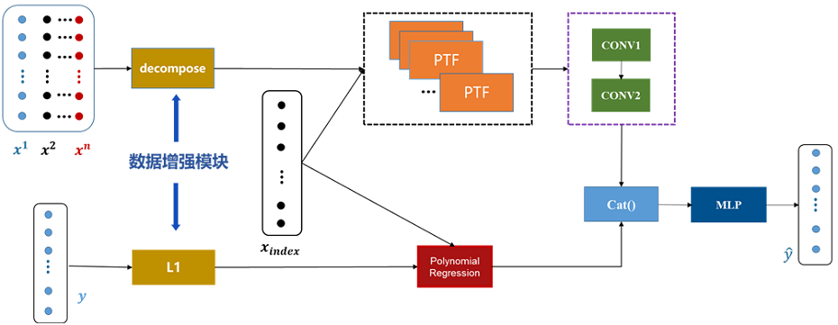

石窟寺岩体稳定性预测评估系统
项目介绍
问题：石窟寺稳定性变化是一个极其漫长的过程，建模难度很大，常规以大数据+深度学习的建模技术失效；
石窟寺稳定性受到多种因素综合作用，如何体现不同地理空间、时间、自然环境、洞窟材质和结构等因素对稳定性的影响是一个挑战,几乎无法验证,目标模型单调递减函数如何表示？影响函数形状的参数如何确定？如何验证？如何加入人为、自然等突变因素？如何增加预测的科学性？如何确定失稳阈值？是待解决的难题。
方案：通过对石窟寺稳定性退化机理的深入研究发现退化机理其实是由微观作用逐步作用到局部，最终作用到整体的，石窟寺的稳定性是一个漫长连续的下降过程，目标模型用连续单调递减函数表示，同时初始值设为1，最终其会收敛于一个小于1的数值。在对收集到的石窟寺多元数据的分析过程中，发现多种因素的影响可以归结为环境因子、材质结构因子和时间周期的影响，那么从长期作用来看，其最终表现在对于函数形状的影响。因此我们提出了基于微观-局部-整体多尺度融合的石窟寺稳定性退化模型,设计了基于目标模型的稳定性评估公式，对石窟寺未来长时间的稳定性进行可靠评估。
项目架构

效果展示
项目视频